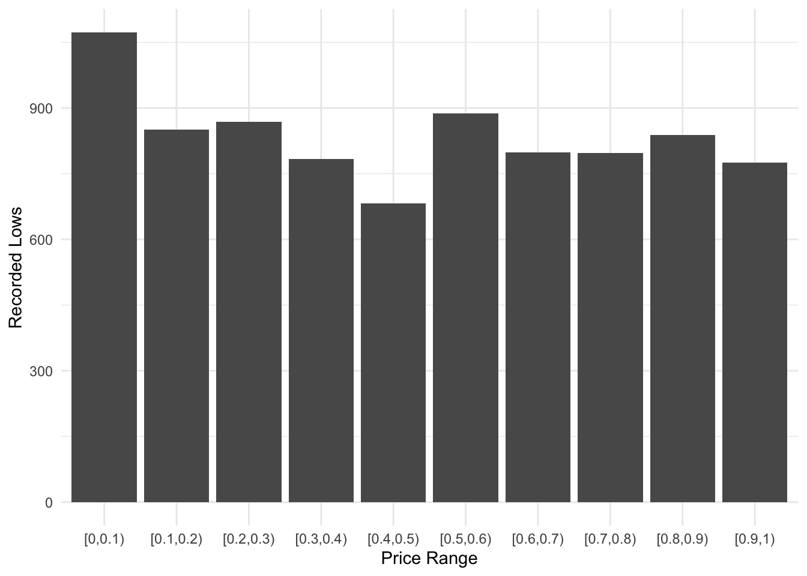

For our COMP/STAT 212 semester project, we decided to investigate what is known as “anchoring bias” in the stock market. Broadly speaking, anchoring bias is when we base our judgments on certain numbers, “anchors”, more because they are comfortable or convenient than that they are relevant to the decision at hand. For example, a study showed that when subjects were asked to estimate the percentage of African nations in the UN, their guesses were significantly different if they were first asked whether it was higher/lower than 10% versus 65% (source). In that case, the anchor was the first number they heard. What we are exploring is slightly different. At first, we wanted to focus on specific “nice” numbers, such as 10 or 100, or “unlucky” numbers such as 13, and see if trading activity changed markedly when stocks hit those potential anchors. However, our initial analysis deemed this was too sensitive to outliers. So instead, we pivoted to a slightly different, and more familiar, idea. You’ve probably noticed when you go into the store that most things aren’t priced at an exact dollar value, but some number of dollars plus 99 cents. Personally, I’ve always thought this was a little ridiculous, but there is a measurable effect on people’s perception of price at 4.99 vs 5. Surely, though, traders on the stock market are far too canny to fall for these marketing tricks, because there’s so much more at stake. If a noticeable effect were observed, it could potentially be leveraged for great profit. Let’s see what the data has to say.
dat_wider <-read_csv('../data/long_data.csv')
Warning: One or more parsing issues, call `problems()` on your data frame for details,
e.g.:
dat <- vroom(...)
problems(dat)
Rows: 44922096 Columns: 9
── Column specification ────────────────────────────────────────────────────────
Delimiter: ","
chr (2): stock, stock_name
dbl (2): Open, Volume
lgl (4): High, Low, Close, Adj.Close
date (1): Date
ℹ Use `spec()` to retrieve the full column specification for this data.
ℹ Specify the column types or set `show_col_types = FALSE` to quiet this message.
The Data
Getting a good dataset was initially quite challenging. Because stock-market data has financial implications, there are a lot of services offering convenient access for a fee, but free data on any reasonable scale is difficult to find. Eventually, however, we obtained a dataset containing data on all (!!) publicly traded stocks over the past five years. Unfortunately, we got what we paid for: the csv takes up almost an entire gigabyte, and presented some wrangling challenges, the first of which was the very large number of NA cells. For now, we just deleted any stock with any missing data whatsoever, but we may revisit this later to ensure that this doesn’t bias the remaining data noticeably. What remained is still almost 45 million observations, covering daily lows, highs, opens, closes, adjusted closes and volumes for all remaining stocks, more than sufficient for this stage of the project.
head(dat_wider, 10)
# A tibble: 10 × 9
Date stock stock_name Open High Low Close Adj.Close Volume
<date> <chr> <chr> <dbl> <lgl> <lgl> <lgl> <lgl> <dbl>
1 2019-10-17 HDGE_Open HDGE 65.6 NA NA NA NA NA
2 2019-10-17 HDGE_High HDGE NA NA NA NA NA NA
3 2019-10-17 HDGE_Low HDGE NA NA NA NA NA NA
4 2019-10-17 HDGE_Close HDGE NA NA NA NA NA NA
5 2019-10-17 HDGE_Adj.Close HDGE NA NA NA NA NA NA
6 2019-10-17 HDGE_Volume HDGE NA NA NA NA NA 10510
7 2019-10-17 FITB_Open FITB 27.4 NA NA NA NA NA
8 2019-10-17 FITB_High FITB NA NA NA NA NA NA
9 2019-10-17 FITB_Low FITB NA NA NA NA NA NA
10 2019-10-17 FITB_Close FITB NA NA NA NA NA NA
Analysis
Measuring anchoring bias in the stock market is a little trickier than it sounds. We can’t literally analyze how many shares were bought at specific prices, because that dataset would be mind-bogglingly huge, if we could somehow manage to find it. Instead, we had to use the best metric we have access to, which is daily lows. It’s not perfect, because sometimes if a stock has a really rough day, the low might be the close, or vice versa, but generally speaking, the low is when people start to think that it is worth buying, and it begins to swing in the other direction. So, we simply counted how many lows were of each cent value, and plotted them.
low_ranges %>%ggplot() +geom_col(aes(x = rounded, y = n)) +labs(x ="Price Range", y ="Recorded Lows") +theme_minimal()
`geom_line()`: Each group consists of only one observation.
ℹ Do you need to adjust the group aesthetic?

Takeaways
These graphs are quite striking. The lows are far more clustered than they “should” be, considering that the differences are literally pocket change. The second graph is perhaps even too striking; the very high value at exactly 0 seems to indicate that some stocks might be recorded in this dataset without a cent value, which we will check out in the near future. But it doesn’t seem like there’s any reason why so many stocks have local minima at 50 cent values, or 20, or 60, except for the comfort of round numbers. And the fact that in both graphs the patterns are so regular implies that there are very real relationships in play here. For the rest of the semester, we will focus on refining and teasing out these relationships. Is there a similar trend considering dollar values instead of cents? Does this change depending on the size and location of the companies involved? Do we observe similar trends using other metrics, such as daily highs or closes? And is bias of any kind affecting our results? These are the questions we hope to answer moving forward.